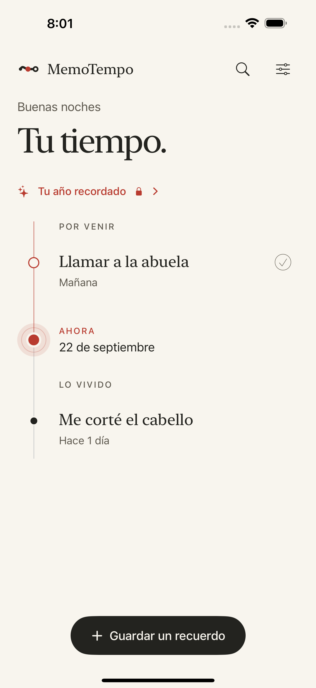

Una frase basta
Escribes “Me corté el pelo ayer” o “Llamar a la abuela mañana”. La app distingue pasado y planes, y puedes corregir la fecha antes de guardar.
Un lugar tranquilo para las pequeñas cosas que ya hiciste y las que quieres hacer. Escribes una frase y MemoTempo la sitúa en tu pasado o en tus planes.

Capturas reales de la app · Datos de demostración
Escribes “Me corté el pelo ayer” o “Llamar a la abuela mañana”. La app distingue pasado y planes, y puedes corregir la fecha antes de guardar.
Por venir, ahora y lo vivido en la misma pantalla. Completas un plan y pasa al historial, con el tiempo transcurrido a la vista.
Los avisos se eligen. También puedes preguntarle a tu tiempo cuándo ocurrió algo y abrir el recuerdo que responde.
No pide cuenta ni envía tus recuerdos a un servidor. Las copias en iCloud, si las activas, viven en tu cuenta de Apple.
Cada ocasión puede guardar fotos, notas y personas. El primer ritmo personal es gratis; Plus añade protección, resumen anual y copias automáticas.
Puedes crear una copia de recuperación y borrar recuerdos o todos los datos de la app desde Ajustes.
MemoTempo está publicada para iPhone y iPad. Recuerda lo cotidiano sin cuenta y sin enviar tus recuerdos a un servidor.